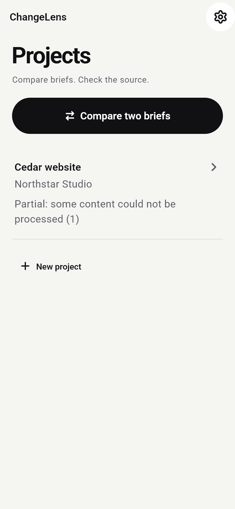
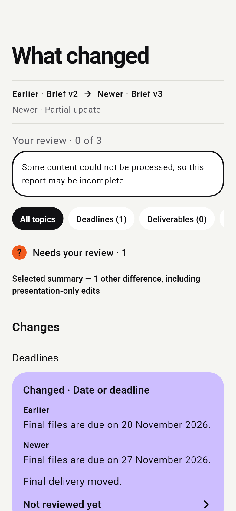
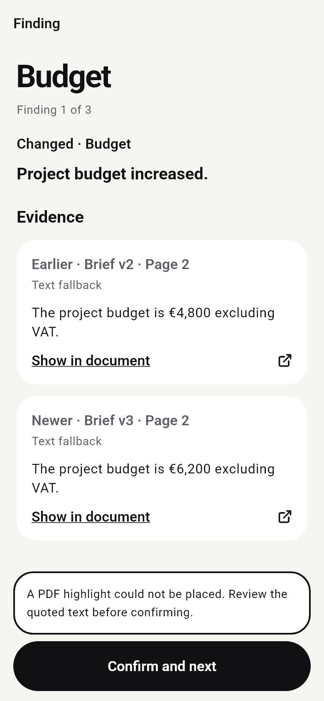

Earlier version
Example · Brief v2The project budget is €4,800 excluding VAT.
Final files are due on 20 November 2026.
The website includes five pages.
Hosting is provided by the client.
The project budget is €4,800 excluding VAT.
Final files are due on 20 November 2026.
The website includes five pages.
Hosting is provided by the client.
The project budget is €6,200 excluding VAT.
Final files are due on 27 November 2026.
The website includes seven pages.
4 things moved · 1 needs a second look
3 things moved
Choose an answer above. The findings shown here depend on it.
Earlier · Brief v2The project budget is €4,800 excluding VAT.
Newer · Brief v3The project budget is €6,200 excluding VAT.
Project budget increased.
Earlier · Brief v2Final files are due on 20 November 2026.
Newer · Brief v3Final files are due on 27 November 2026.
Final delivery moved.
Earlier · Brief v2The website includes five pages.
Newer · Brief v3The website includes seven pages.
Page count increased.
Earlier · Brief v2Hosting is provided by the client.
Missing from a complete replacement. This doesn’t mean it is cancelled.
Earlier · Brief v2Hosting is provided by the client.
A partial update didn’t mention it. It is neither removed nor reconfirmed.
Earlier · Brief v2Hosting is provided by the client.
ChangeLens can’t tell. Check it yourself.
Pick the earlier and the newer version yourself and say whether the newer one is a complete replacement, a partial update, or unknown. Nothing is preselected, and the order never comes from upload time or file names.
It parses both inputs, extracts facts, aligns and compares them, and verifies every quotation against its source before reporting.
Findings are grouped by topic. Uncertain ones stay in their own Needs your review group, whatever topic filter is on. Every finding opens on its quoted passages; a PDF opens with the passage highlighted, or falls back to the parsed text with a visible warning.
Confirming, correcting or dismissing a finding is your own review. A correction is saved as a new revision and the original is kept. A client’s approval is a separate record labelled Client approval recorded (not verified by ChangeLens).



